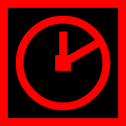

Injector
This is a simple dependency injection library with a small set of features. It is primarily developed to be used in conjunction with our other libraries. Its simple nature also makes it an easy point to start learning DI.
Package ManagerUnity does not support some neccesary features (like packages with git dependencies). This tool will be a temporary solution until Unity implementes them.
Usage:
Our repositories.json file:
|
|
|
InjectorThis is a simple dependency injection library with a small set of features. It is primarily developed to be used in conjunction with our other libraries. Its simple nature also makes it an easy point to start learning DI. |
DirectorThis is an MVP (Model-View-Presenter) architectural pattern library. If you want to organize your projects with an architectural pattern and are looking for a library that is relatively simple and easy to learn, then this is for you. |
|  |
Time ManagerThis is a minimal time library with scheduled callbacks. With this library you can;
|